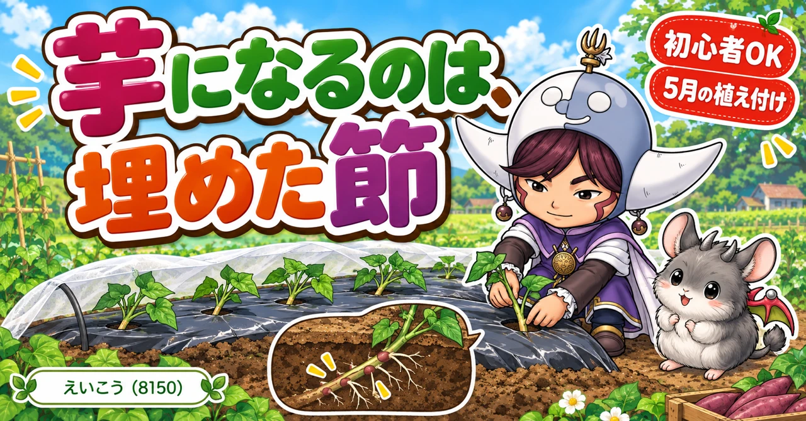
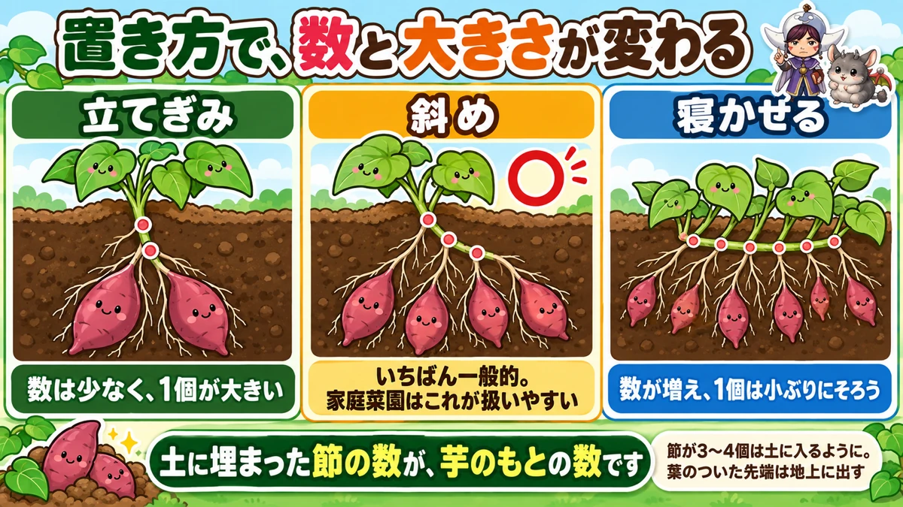
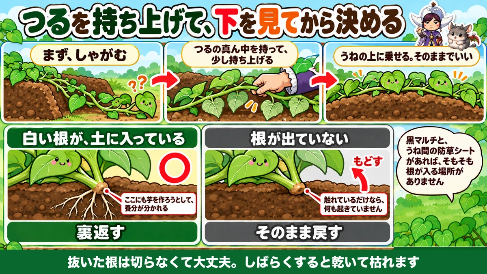
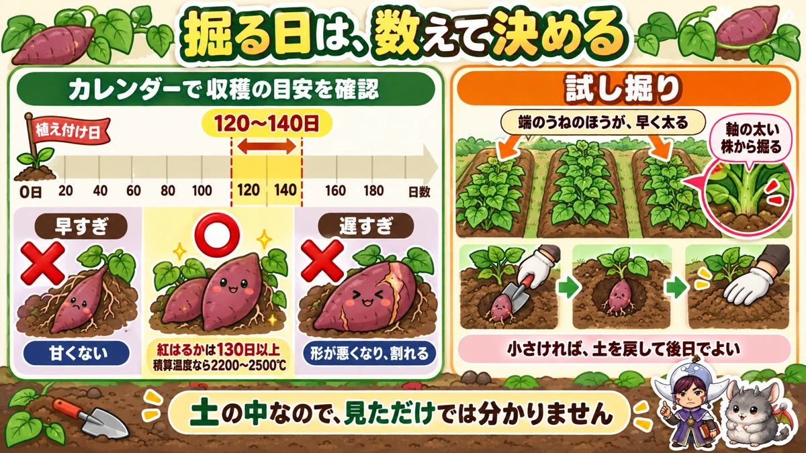
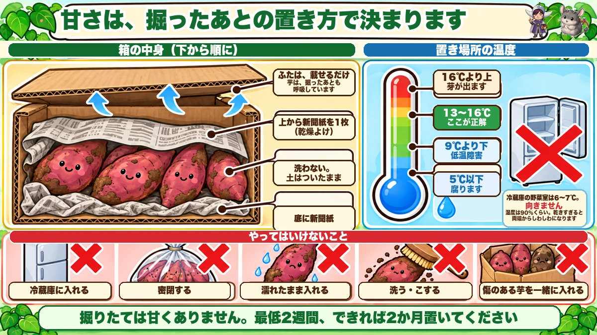
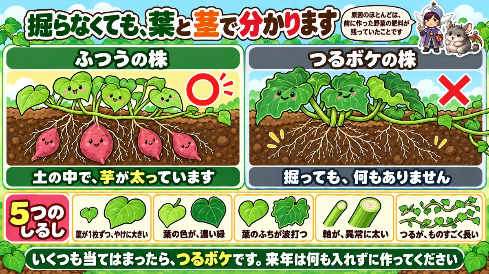

さつまいも栽培の判断帳｜苗・肥料・試し掘り・甘くする保存まで

🍠「葉ばかり茂って、掘ったら芋がなかった」
🍠「植えて数日で、苗が枯れてしまった」
🍠「いつ掘ればいいのか、まったく分からない」
どうも、8150（えいこう）です🌱 家庭菜園歴8年、理科の教員免許を持っていて、有機・無農薬で野菜を育てています。
前回はスイカでした。今日はさつまいもです。
以前つる返しの記事を書きましたが、今日は植え付けと収穫の話をします。
先に、この記事でいちばん言いたいことを言っておきますね。
芋ができるのは、土に埋まった「節」です。
だから苗をどう置くかで、芋の数と大きさが変わります🍠
まず、さつまいもの基本データ
3つだけ押さえてください
- 科：ヒルガオ科（連作にわりあい強い野菜です）
- 植え付け：5月〜6月上旬
- 収穫：9月〜11月
※時期は中間地（関東〜関西の平野部）が目安。寒い地域は少し遅らせ、暖かい地域は早めに。
📖 この記事の目次
この記事で分かること
- 植える日より先に、霜の終わりと秋の収穫までの期間を確認します。
- つる苗は見た目の長さだけで選ばず、葉の付け根にある節と先端の元気さを見ます。
- 肥料は前作の残りも含めて判断。しおれた苗へ、反射的に追肥しません。
- 水平、斜め、垂直の植え方は、欲しい芋の数と大きさに合わせて選びます。
- 収穫日は日数だけで確定せず、試し掘りで大きさを確認し、霜より前に掘り終えます。
- 長く置く芋は洗わず、乾かして選別。保存中は冷えすぎ、蒸れ、傷みを確認します。
さつまいもは、夏の葉を見ているだけでは出来が分かりにくい野菜です。「めっちゃ茂ってる！これは期待できる！」と思っても、掘ったら細い根ばかり。反対に、掘りたてを食べて甘くなくても、栽培に失敗したとは限りません。
育てる期間と、食べるために置く期間を分けると、判断がぐっと楽になります。畑では根を太らせる条件を整え、掘ったあとは傷めず保存する。この二つをつなぐのが、収穫時の扱いです。
このページでは、初めて植えるみなさんには時期順の手順を、すでに困っているみなさんには症状別の確認を用意しました。数字が違う説明は、その違いも残しています。暗記して正解を当てるより、目の前の苗や土を見て「今はこっちやな」と選ぶために使ってください☺️
早見：さつまいもの育て方（ひと目で分かる数字）
植える前に確認する数字
- 植え付けの始まり：霜の心配がなくなり、気温15℃以上を目安にできるころ。一般地では5月以降という説明があります。冷え込みの残る地域は、店頭に苗が並ぶ時期だけで決めません。
- 植え付けの終わり：通常の計画では初夏に植えます。遅植えには7月末やお盆までという説明もありますが、秋の暖かさが続く条件の話です。全国で同じ締め切りにはできません。
- つる苗の姿：長さ30〜40cm、節が7〜8個あるものが目安。葉と葉の間ばかり長い苗より、節を確保できるものを選びます。
- 埋める部分：3〜4節程度という説明と、苗の約3分の2を土に入れ、結果として5〜6節になる説明があります。先端の成長点は地上に残します。
- 株間：30cmを目安とする説明が多く、垂直植えでは20cmの例もあります。水平に寝かせる場合は、苗が入る長さと隣株との余裕を見ます。
- うねの幅：通路を含む幅約1m、植える上面の幅40〜50cmという整理です。両方を『うね幅』として混ぜないでください。
- うねの高さ：20〜30cmの高うねが目安。水の逃げ道を作り、雨のあとに水が居座る場所を避けます。
- 元肥：前作の肥料が残る畑では追加なしを検討。蓄積が少ない畑では少量を入れる説明もあり、ゼロか多量かの二択にしません。
- 追肥：原則控える説明と、植えて約1か月後に補う説明があります。植え付け直後と収穫前1か月は避けるという説明もあるため、時期だけを切り取らず前提を確認します。
- つる返し：8月初旬から見回り、3〜4週間おきという例と、期間中1〜2回で十分という例があります。土に根付いたかを見て決める方法もあります。
- 収穫まで：植え付けから100〜150日程度と説明に幅があります。110〜120日を使う例も多く、紅はるかでは約130日以上の説明があります。
- 収穫の季節：9月後半〜11月が目安ですが、初霜が先に来る地域では霜を優先して前倒しします。
- 甘さを待つ期間：1〜4週間ほどと説明によって違います。料理や品種で感じ方が変わり、焼き芋では2週間以上置く考え方があります。
- 通常の保存温度：13〜16℃を中心とする説明と、10〜15℃を示す説明があります。温度が低いほどよい野菜ではありません。
- キュアリングの条件：30〜35℃、湿度90〜95％、3〜5日という説明があります。これは収穫直後の傷を治す処理で、その温度で冬まで保存する意味ではありません。
- 連作の間隔：同じ場所で続けやすいという説明があります。材料には一律の休栽年数がないため、何年あければよいと決めず、病害虫や土の履歴を見ます。
数字の組み合わせで迷わないために
まず、品種名、植えた日、前に育てた野菜をメモします。これだけでも、あとから肥料と収穫の説明を選びやすくなります。
例えば、肥料を使わず育てた実例でも、前の作物に入れた肥料が土へ残っていた場合があります。『今年は入れていない』と『養分がほとんどない』は違うんですよね。そこを見落とすと、同じ無肥料でも結果が変わります。
収穫日数も、早めに太る品種と、秋に肥大が進む品種を一緒にしません。日数は掘る日を予約する数字というより、芋の様子を見始める合図です。天気と実物を合わせれば、予定表に振り回されにくくなります。
- 苗の表示と品種を残した
- 植え付け日と秋の霜の時期を確認した
- 前作と肥料を入れた履歴を調べた
- うねの上面と通路を分けて場所を確保した
- 保存場所の温度を確認できるようにした
作業の手順（時期の順）
植える前：食べたい芋と育てる場所を決める
- 『ホクホクした料理向き』『しっとりした焼き芋向き』など、食べたい方向を決めます。
- 苗の表示を見て品種を確認し、その地域で育てられる期間を調べます。
- 地植えなら、前作と肥料の履歴、水はけ、つるが伸びる場所を確認します。
- 容器なら、水分管理を続けられる場所と、つるの置き場を先に考えます。
紅はるかは貯蔵後の甘さを楽しみたい場合の候補で、つるボケになりにくいという説明があります。紅あずまはホクホク系ですが、作りやすさの評価が割れています。名前を知っているから一択、ではなく、食べ方と土の条件を合わせて選びましょう。
同じ品種でも、掘ってすぐ食べる場合と、しばらく保存した場合では印象が変わります。『甘い品種』という説明だけで、収穫当日の味まで想像しないのがコツです。保存場所を用意できるかも、品種選びの一部になります。
地植えのつるは株元から外へ広がります。芋を植える場所だけ測って終わると、夏には通路や隣の野菜へ進出しがちです。小さな畑ほど、どちらへ伸ばすかを植える前に決めてください。
土の準備：肥料より先に排水を整える
- 雨のあとの土を見て、水が残る位置を確認します。
- 耕すときに石や硬い塊を取り除き、見つけたコガネムシの幼虫も除去します。
- 前作で施肥した場所では、今回さらに足す必要があるかを考えます。
- 植える上面を40〜50cmほど、高さを20〜30cmほどにする目安で、細めの高うねを作ります。
- 通路側にも水が逃げる余地を残し、雨水の出口を確認します。
高く盛ればどんな土地でも解決、とは限りません。うねの横に水がたまり続ければ、土全体が湿ったままになります。上面の形と、周囲の水の流れをセットで見ることが必要です。
芋が太る場所に大きな石があると、形がそろいにくくなります。見つけたものを取り除く程度からで大丈夫。土をふるって一粒残らずなくすような作業を、栽培の必須条件にしなくてよいです。
土づくりでは、毎回の野菜と同じ感覚で肥料を入れないようにします。さつまいもは、葉がよく育つことと、食べたい根が太ることの釣り合いが重要です。前作の養分が残る畑へさらに足すと、地上部ばかり勢いがつくことがあります。
苗の購入：節と成長点を確かめる
- 苗の先端を見て、新しい葉が出る部分が傷んでいないか確認します。
- 葉の付け根をたどり、7〜8節を目安に数えます。
- 30〜40cmほどの長さがあっても、節の間ばかり長いものは避けます。
- 茎が全体に茶色く乾いていないか、折れや腐りがないかを見ます。
- 植える日を先に決め、切られた苗を長く放置しないようにします。
つる苗は、根と土がそろったポット苗とは違います。切り取った茎から新しい根を出し、土に落ち着くところから栽培が始まります。そのため、葉が少し下を向いているだけで不良苗とは言い切れません。
一方で、乾いてしまった茎や失われた成長点は、単なるしおれと分けます。『さつまいもは強い』を、どんな苗でも復活する意味に広げないでください。先端と茎が生きているかが、まず見るところです。
発根させてから植える説明もありますが、苗の前処理と水やりまで含めて一つの方法です。根が出ているほど上等、と決めつけず、後ろの両論の章で条件を確認しましょう。
植える日：苗を置く向きと埋める節を決める
- 霜の危険が過ぎたか、植えたあと冷え込む予報がないかを確認します。
- 暑い晴天の真昼を避け、曇りや夕方など苗が熱を受けにくい時間を選びます。
- 苗を地上に仮置きして、株間と向きをそろえます。
- 水平、斜め、垂直から植え方を決め、土へ入れる節を数えます。
- 茎を折らないよう土へ入れ、茎の周りに土を寄せて落ち着かせます。
- 先端の成長点が土の上に残っているか、葉が熱い地面へ押しつけられていないかを確認します。
- 土の乾き具合と苗の前処理に合わせて水分を補います。
水平植えは、多くの節を土に入れやすい方法です。小ぶりの芋を多めにねらう場合の候補になります。長い苗を寝かせる分、横へ使う場所が必要です。
斜め植えは、節を確保しつつ作業しやすい中間の方法です。角度45度という説明と、水平に近い30度という説明があります。角度をきっちり測るより、成長点を残し、必要な節を無理なく埋めることを優先します。
垂直植えは、土に入る節が比較的少なくなるため、数を絞って大きな芋をねらう考え方です。短い苗で使う例もあります。ただし、どの方法でも大きさや個数が約束されるわけではありません。苗の状態とその後の生育も関わります。

この図では、茎の向きと土に入る節を見比べてください。図の個数を、そのまま収穫できる芋の本数として数えないこと。節から出る根のすべてが、太い芋になるわけではありません。
植え付け後：新しい葉が動くまで見守る
- 葉全体のしおれだけでなく、先端と茎を見ます。
- 土が乾いているか、逆に湿ったままかを確かめます。
- 強い日差しが続く場合は、葉が熱を受けすぎていないか確認します。
- 先端から新しい芽が伸び、葉が上を向く変化を記録します。
- 生長が始まる前の不安を、追肥で埋めようとしないようにします。
植えた直後は、葉の見た目がいったん頼りなくなります。「え、昨日より悪くなってるやん」と焦るところですが、地上の古い葉と、新しい根の動きは同じ速度で見えません。
先端から芽が伸びていれば、根付いたかを判断するよい手がかりです。茎も緑を保ち、葉が立ってくるなら、その変化を優先して見ます。毎日引き抜いて根を確かめると、ようやく伸びた根を傷めてしまいます。
地植えで根付いたあとは、頻繁な水やりをしない説明が多いです。ただし、何週間も雨がなく、土が極端に乾く年まで放置する意味ではありません。容器栽培では土量が限られるので、夏の乾燥を別に見てください。
夏：葉、つるの根付き、はみ出しを確認する
- 葉色と一枚の大きさ、つるの太さを見て、極端な旺盛さがないか確認します。
- つるの一部をそっと持ち上げ、地面に根付いているかを見ます。
- 必要な場合は、株元を引き抜かないように、途中の根付いた部分だけを持ち上げます。
- つるを自分の区画内へ戻し、健全な先端をむやみに切らないようにします。
- 葉裏と株元を見て、食害が進んでいないか調べます。
つる返しの目的は、伸びた茎が途中から土へ根付くのを外すことと、管理する場所へつるを戻すことです。葉を一枚ずつきれいに整える作業ではありません。返したあと一時的に葉が下を向いても、向きが戻っていくのを見守ります。

つるが地面に触れない仕立てでは、根付きを外す仕事そのものが減ります。支柱などへ誘引する場合、さつまいものつるは自分で巻き付くものとして扱わず、茎を傷めないよう支えます。支柱が傾かないかも見回りに入れましょう。
空中へ伸ばせば必ず増収、とは材料から言えません。狭い場所の通路を確保したい、土へ根付く箇所を減らしたい、という目的と作業量を比べて選びます。
夏の終わり：地下と獣の動きも見回る
- 葉の食害を見つけたら、広がり方と葉裏の虫を調べます。
- 土が掘り返された跡や、周囲での獣害がないか確認します。
- 芋が育つころに被害がある場所では、栽培区画を囲う準備をします。
- 囲いの上部だけでなく、地面との間に隙間が残らないか点検します。
- 少数株なら、そのうねを守る範囲から考えます。
葉に穴が少しあることと、葉が次々失われることは分けます。数枚の食害で、新しい葉が出ているなら、即座に栽培終了とはしません。虫を見つけて取り除き、食害が続くかを確認します。
獣害は地下の芋に届くため、葉だけ見ていると発見が遅れます。8月下旬〜10月初めという発生例がありますが、その日付だけを守って設置すればよいわけではありません。周囲で被害が始まったかが判断の手がかりです。
秋：試し掘りで収穫の予定を調整する
- 植え付け日からの日数を数え、品種の肥大の早さを確認します。
- 本収穫を考える約1か月前を目安に、代表となる株の芋を確かめます。
- 高温で進みが早そうな年は、普段の予定より早く確認します。
- 大きさだけ見たい場合は、つるを残し、株の周囲の土を慎重に少しよけます。
- 芋を傷めず確認できたら土を戻し、再び地表へ露出しないようにします。
- 食べたいサイズと霜の予報を合わせ、本収穫日を決めます。
外側の葉がまだ緑でも、芋が十分太っている場合があります。逆に、葉色が抜けていても、欲しい大きさとは限りません。地上の合図は入り口として使い、地下の実物で判断します。

図の数字は見回りを始める目安です。紅はるかの遅めの肥大を、早く太る紅あずまなどと同じ日数で判断しません。端の株が大きければ全部同じ、とも決めず、場所による違いを見て必要なら分けて掘ります。
収穫を待ちすぎると、大きくなりすぎたり、割れや虫食いが増えたりすることがあります。大きさを競うより、食べやすく保存しやすい状態で掘る方が、家庭では使いやすいかなと思います。
掘る日：切り傷と湿りを減らす
- できれば雨の続いた直後を避け、土が乾いた日を選びます。
- つるをたどって株元を確認し、掘る場所が見えるように地上部を整理します。
- 株元のすぐ横へ道具を入れず、少し離れた位置から土を起こします。
- 芋が見えたら手で周囲をよけ、強く引っ張ったり投げたりせず取り出します。
- 土をこすり落とそうとせず、表面の湿りを乾かします。
- 健全な芋、傷のある芋、虫食いのある芋を分けます。
芋の位置は、地上の茎から想像した場所とずれることがあります。最初の一掘りを遠めから入れるのは、道具で芋を真っ二つにするのを減らすためです。掘りやすいことと、傷をつけないことの両方を考えます。
収穫した芋は皮が傷みやすいので、軍手でごしごし磨いて土を落とす必要はありません。長く保存する分は洗わず、表面の水分が残らないように扱います。泥で中の状態が見えないときも、乾いてから軽く確認してください。
乾かすために屋外へ出す場合、夜まで出しっぱなしにしない計画にします。カラスやネズミの被害に加え、露や冷え込みも気になります。日をまたがず取り込める量で作業すると、掘ったあとの管理が楽です。
掘ったあと：保存する芋と早く使う芋を分ける
- 切り傷、皮むけ、虫の穴、柔らかい部分を一個ずつ確認します。
- 健全で乾いた芋を長期保存用に分けます。
- 小さな傷があるものは、傷みを確認しながら早めに使う分へ回します。
- 腐敗が疑われるものを、保存箱や調理用の芋へ混ぜないようにします。
- 品種と収穫日が分かるようにして、置いた期間を比べられるようにします。
大きな芋を掘れたことがゴールに見えますが、保存するならここでもう一仕事です。健全なものへ傷んだものを混ぜると、あとから箱の中を見直す仕事が増えます。入口で分ける方が、結果として手間が減ります。
甘くなるのを待つ分は、健全な芋から選びます。傷がある芋へ『2週間待つ』を一律に当てはめないでください。おいしさの予定より、傷みの進行の確認を先にします。
保存中：場所の名前より温度を確認する
- 冷蔵庫ではなく、冷えすぎない室内の候補を選びます。
- 置き場の昼夜の温度を確認し、13〜16℃前後という目安と比べます。
- 光が直接当たる場所や、暖房の温風を受ける場所を避けます。
- 水滴がたまるような密閉を避け、乾きすぎと蒸れの両方を見ます。
- 傷んだ芋を見つけたら取り分け、周囲の芋も確認します。
玄関がよいという説明と、玄関は冷えすぎるという説明があります。家の造りや地域で、同じ『玄関』でも温度は変わります。置いた場所の名前を信じるより、実際の温度を見た方が早いです。

図の保存と、収穫直後のキュアリングは分けて読みます。キュアリングで使う高温高湿の状態を、そのまま日常の置き方にしません。箱へ入れて終わりではなく、ときどき中を見られる量と置き場にしておきましょう。
収穫後の畑：翌年の肥料判断へつなげる
- 収穫時に見つけた幼虫や、芋の傷み方を記録します。
- 土が固まった場所を確認し、次の作物を始める前に耕します。
- 同じ場所で続ける場合は、今年の葉の茂り方と芋の大きさを残します。
- 後作を植える場合は、その野菜の適期と残っている養分を確認します。
後作に大根を使う説明もありますが、さつまいもの収穫が遅ければ、通常のまき時に間に合わない場合があります。後作の名前だけを覚えず、収穫日と地域の寒さから予定を考えます。
翌年の元肥を決める材料は、『今年入れた量』だけではありません。葉が極端に茂ったか、根が太ったか、土に水が残ったかを一緒に振り返ると、同じ場所での失敗を減らす手がかりになります。
失敗の見分け方（症状→原因→やること）
植えた苗がぐったりしている
- 症状：葉が垂れ、植える前より元気がなく見えます。
- 考えられる原因：まだ根が十分働いていない、強い日差しで水を失った、土が乾きすぎた、熱い地面で葉が傷んだ、などが候補です。
- やること：先端と茎の生きた部分を確認し、土の湿りと熱を調べます。乾燥や日差しへの対応を先にし、肥料は急いで追加しません。
しおれだけでは、枯死したか判断できません。新しい芽が動くか、茎の色が保たれているかを合わせて見ます。湿った土でも回復せず、茎が茶色く乾いていくなら、単なる植え付け直後の変化とは分けて考えてください。
土が湿っているのに、葉がしおれる
- 症状：雨や水やりのあとも葉が垂れ、土は乾いていません。
- 考えられる原因：過湿で根の働きが落ちている、茎や根が傷んでいる、といった可能性があります。
- やること：水を足す前に、うねと通路へ水が残っていないか、茎が柔らかく傷んでいないかを確認します。
葉が垂れると、水をあげたくなりますよね。でも、吸う側の根が不調なら、土に水を追加しても解決へ向かうとは限りません。『土が乾いてしおれる』と『土が湿っていて吸えない』を分けるだけで、次の一手が変わります。
葉も茎も立派なのに、芋が小さい
- 症状：大きく濃い緑の葉が広がり、茎も太いのに、試し掘りでは根が十分太っていません。
- 考えられる原因：窒素が効きすぎたつるボケ、収穫確認が早すぎる、日照や水はけの不調などです。
- やること：品種と植え付け日を照合し、前作の肥料、葉の波打ち、つるの長さ、土への根付きを確認します。追加の肥料で改善しようとしません。
つるボケを疑う目安は、一枚の葉が極端に大きい、色が濃い、葉面が波打つ、茎が異常に太い、つるが長く伸びすぎる、という組み合わせです。葉色一つだけで決めるより、複数の様子を見ます。

生育旺盛な品種もあるので、地上部が大きいだけで『もう芋はできない』と断定しません。とくに秋の肥大が遅めの品種を、早い時期に一株掘って諦めないこと。日付を合わせて見るのが先です。
明らかにつるボケになったあと、確実に戻せる方法は材料では示されていません。つる返しや先端の切り取りを挙げる説明もありますが、健全な株まで切ってしまうと生育を落とします。無理な切り込みを通常管理へ持ち込まず、翌年の肥料と場所選びの記録を残しましょう。
雨がない夏に、つるの勢いが落ちた
- 症状：根付いたあとでも、葉やつるが弱り、土が乾いた状態が長く続きます。
- 考えられる原因：猛暑と長期間の乾燥、容器の土量に対する水不足が候補です。
- やること：地表だけでなく根のある位置の湿りを確認します。極端に乾いていれば補い、地植えの省水管理を容器へそのまま当てはめません。
乾燥に強いという性質は、水を全く使わず育つ意味ではありません。日中に一時的に垂れるだけか、朝夕も弱ったままかを見ると、状況を整理しやすくなります。土が湿っている株へ同じ対処をしないことも大切です。
葉に穴があり、食害が広がっている
- 症状：一部の葉が欠け、数日後には別の葉にも穴が増えます。
- 考えられる原因：葉を食べる幼虫などが残り、食害が続いている可能性があります。
- やること：葉裏や重なった部分をめくり、見つけた虫を除去します。穴のある葉をすべて切るのではなく、残って働ける緑の部分を守ります。
数枚の穴と、株全体の葉が失われる状態では影響が違います。新しい葉が出ているか、食害が止まったかを記録してください。虫の名前を当てるために待ち続けるより、まず今いる虫と食べられた場所を確認できます。
芋の表面に穴やかじられた跡がある
- 症状：掘った芋に食べられた跡があり、周囲の土に幼虫が見つかることがあります。
- 考えられる原因：コガネムシの幼虫など、地下での食害が候補です。
- やること：芋の傷を確認し、見つけた幼虫を取り除きます。傷のある芋を長期保存用へ混ぜず、来季の土の準備に被害の記録を使います。
表面の穴を見ただけで、虫の種類は確定できません。掘ったときの土も一緒に観察します。地上の葉が元気だった株でも地下の被害は起こりうるため、つるの勢いだけで収穫物の状態を予測しないようにします。
いびつな芋、くびれた芋が多い
- 症状：芋が曲がる、途中でくびれる、表面がごつごつするなど、形がそろいません。
- 考えられる原因：石や硬い土の影響、排水の不調、センチュウなど複数の候補があります。
- やること：一個の形だけで原因を決めず、同じ場所で続いているか、土に障害物があるかを確認します。被害が続く場合は写真と土の履歴を残して相談します。
『くびれ＝センチュウ』の一対一で覚えないことがポイントです。土の物理的な邪魔と、生物による被害では、次の準備が変わります。分からない原因を、肥料の不足ということにして補うのは避けます。
収穫前に土が掘り返されている
- 症状：株元やうねに穴があり、芋が露出したり、なくなったりしています。
- 考えられる原因：獣が入り込んで食べた可能性があります。
- やること：周辺の被害と囲いの隙間を確認します。とくに地面との境目を点検し、再侵入を防ぐ対策を検討します。
どの動物かを確認せず、穴の大きさだけで断定しません。材料にはモグラの具体的な対策がないため、そこを別の動物向けの方法で埋めないようにします。守りたい株が少数なら、区画を絞って点検しやすくする考え方があります。
掘りたてを食べたら、期待より甘くない
- 症状：大きさは十分でも、加熱した芋の甘みが弱く感じられます。
- 考えられる原因：収穫直後で貯蔵による変化が進んでいない、品種の食感が想像と違う、調理条件が違う、などです。
- やること：健全な芋を適した場所へ置き、品種と収穫日をそろえて、日を置いたものと比べます。
ここで畑へ肥料を増やす話へ戻らなくて大丈夫です。芋を太らせることと、掘ったあとの甘さを楽しむことは別の段階です。保存期間の目安を使いつつ、傷のある芋まで長く待たせないようにしてください。
保存中の芋がしなびる、柔らかくなる
- 症状：両端がしわになる、表面に水滴がつく、一部が柔らかくなる、異臭やカビが出るなどの変化があります。
- 考えられる原因：乾きすぎ、冷えすぎ、密閉による蒸れ、収穫時の傷、濡れたままの収納が候補です。
- やること：傷んだものを分け、置き場の温度と箱の湿りを確認します。乾燥対策として袋をきつく閉じたり、腐ったものを温めて戻そうとしたりしません。
しなびと腐敗は同じ現象ではありません。乾燥気味の芋と、局所的にどろっと崩れる芋を分けて見ます。『保存温度は合っていたはず』でも、窓際や床に近い位置が夜だけ冷えていることもあるので、実際に芋を置いた位置を確かめましょう。
説明が分かれていること
紅あずまは初心者向きか、肥料の影響を受けやすいか
- Aという説明：栽培解説では、紅あずまを育てやすい品種として挙げるものがあります。
- Bという説明：別の栽培解説では、残った肥料でつるの勢いが強くなり、芋の形やサイズをそろえにくいとします。高温や多雨を理由に紅はるかを選ぶ説明もあります。
- どう考えればよいか：品種名だけで難しさを固定せず、前作の肥料とその土地の天候を合わせます。初めてで残肥が気になるなら、つるボケしにくいとされる紅はるかも候補です。
『初心者向き』という言葉には、苗の手に入りやすさ、生育の強さ、芋のそろいやすさなど、別々の意味が含まれます。よく伸びるから扱いやすいという評価と、よく伸びすぎて困るという評価は、畑の条件によって両方起こりえます。
根を出してから植えるか、未発根の苗を植えるか
- Aという説明：仮植えで根が増えた苗は、吸収する根の生育が先行し、芋が増えにくいとする栽培解説があります。
- Bという説明：購入したつる苗を一晩水につけ、植え付け後の根付きを助ける説明があります。
- どう考えればよいか：長く仮植えして育った根と、短い前処理による根付きを助ける方法は、完全に同じ条件ではありません。発根の有無だけでよしあしを決めません。
ここは、説明を無理に一本へまとめない方が分かりやすいです。使う苗の状態、水につける時間、植えたあとの乾燥対策までそろえて読みます。長く保管した苗を、一晩の前処理と同じものとして扱わないでください。
しおれさせるか、水分を補って植えるか
- Aという説明：切った苗を1〜2時間ほど軽くしおれさせてから植える方法があります。
- Bという説明：前夜に水につけてから植える方法があります。
- どう考えればよいか：両方を順に実施すれば効果が上がる、と考えません。苗の状態と天気に合わせ、一つの方法の前後関係を確認します。
軽いしおれと、乾いて生きた組織を失うことは別です。強い日差しの中へ長く置く手順に置き換えないようにします。どちらの方法でも、茎と先端が傷んでいないかは確認できます。
元肥は不要か、少量なら有効か
- Aという説明：前作の肥料が残る畑では、追加せず十分収穫できた栽培比較があります。
- Bという説明：しばらく作付けしていない畑で、少量の施肥区の方が肥大が早く、形もそろった比較があります。
- どう考えればよいか：土へすでにある養分を含めて考えます。『どの畑でも無肥料』や『必ず元肥を入れる』の一律の答えにしません。
これらの比較は、みなさんの畑で同じ重さが採れる証明ではありません。出発点が違えば、肥料を入れた意味も変わるという材料です。量を決める前に、前作の施肥と今年の葉の様子を確認する順にしましょう。
追肥をしないか、根付いたあとに補うか
- Aという説明：栽培解説では追肥を控え、夏になって葉が黄化するなど、必要を疑う場合以外は追加しないとします。
- Bという説明：別の解説では、植えて約1か月後に葉の働きを支えるために補う方法が示されています。ただし、植え付け直後と収穫前1か月は避けます。
- どう考えればよいか：元肥、残肥、葉色、排水を確認し、その栽培方法の前提に沿います。しおれや黄化を見たら、すぐ肥料不足と決めないことが共通の注意です。
根が傷んで吸えない状態で成分を足しても、原因への対応になりません。材料には万人向けの追肥量がないため、このページでも『1株に何g』という新しい数字は作りません。時期が分かっても量と条件が分からないなら、そこを推測で埋めないでください。
植え付け後の水は不要か、根付くまで必要か
- Aという説明：一晩水につけた苗を使い、植え付け後の水やりを省く栽培方法があります。
- Bという説明：植えたあとに水を与え、晴天が続く間は乾燥や日差しへの対策をする方法があります。
- どう考えればよいか：前処理の違いを外して、水やりの結論だけ比べないこと。乾いた土、雨の前、猛暑の植え付けを同じ条件にしません。
根付いたあとは省水管理でも、まだ根がない期間は違います。『乾燥に強い野菜』という大きな特徴だけで、切った苗の初日を判断しない方が安心です。
つる返しは必要か、省いてよいか
- Aという説明：家庭菜園の少数株なら、途中の根付きを外した方が芋の肥大を助け、隣への侵入も防げるとする解説があります。
- Bという説明：紅はるかなどでは途中に根が出ても芋づくりへの影響が小さく、作業を省けるとする解説があります。地面への根付きを防ぐ栽培条件で省く説明もあります。
- どう考えればよいか：品種、土への接触、実際の根付き、区画からのはみ出しを見ます。暦どおりに全株を何度も返すより、必要な箇所を確認します。
途中の根を外す目的と、つるを通路から戻す目的は分けられます。芋への影響をまだ判断できなくても、通路や隣株を守る理由で戻すことはあります。その場合も、主株の根まで抜いたり、元気な先端を切ったりしないようにします。
葉の色で掘るか、日数と試し掘りで決めるか
- Aという説明：葉色が薄くなることを収穫の目安にする栽培解説があります。
- Bという説明：葉に一律の収穫サインはなく、植え付け日と芋のサイズを見て判断する解説があります。
- どう考えればよいか：葉色は補助にし、品種と経過日数を照合して地下を確認します。肥料が効いて緑が続く株を、色が抜けるまで待ち続けません。
100〜150日という幅を、間を取って125日と一本化しないことも大切です。品種や暖かさの違いを平均すると、どの条件にも合わない予定になる場合があります。『自分の条件で、いつ確認するか』へ置き換えましょう。
保存は何℃で、どのくらい続けられるか
- Aという説明：貯蔵の解説には13〜16℃、湿度90〜95％という条件があります。
- Bという説明：10〜15℃を示す解説や、より低い温度で傷むことを強調する解説もあります。保存期間も年内〜1月、3月、翌年5〜6月までと幅があります。
- どう考えればよいか：温度は13〜15℃付近を確認の中心にし、期間は保証と扱いません。品種、傷、前処理、箱の環境を含め、途中の状態で判断します。
低温障害の説明にも9℃以下や5℃以下など違う数字があるので、『5℃までは平気』と境目を固定しません。温度が低い状態に置いた長さも関わります。一般の生鮮野菜と同じ感覚で冷蔵庫へ入れる方法は避けます。
キュアリングと甘くなるまでの貯蔵は、同じか
- Aという説明：収穫直後に高温高湿で傷の回復を促すキュアリングを詳しく扱い、味の変化にも触れる解説があります。
- Bという説明：特別な処理をせず、通常の保存で数週間待つことを中心にする解説があります。
- どう考えればよいか：傷の回復を促す処理と、食べるまで置く期間を分けます。キュアリングの高温を、甘さのために何週間も続ける計画へ変えません。
30〜35℃という処理温度は、置いておけば勝手に守られるものではありません。袋などで湿度を上げる例もありますが、日差しで過熱し、密閉で蒸れる可能性を同時に考えます。条件を管理できないときは、処理を必須にせず、傷をつけない収穫と健全な芋の選別、通常の保存を先に整えます。
よくある質問
学ぶ：さつまいものしくみ🔬
まとめ
黒マルチ
さつまいもは地温が要ります。マルチを張ると、植え付けが早められます。


敷きわら
つる返しのあと、つるの下に敷いておくと不定根が張りにくくなります。
![[商品価格に関しましては、リンクが作成された時点と現時点で情報が変更されている場合がございます。]](https://hbb.afl.rakuten.co.jp/hgb/56bc2fb2.ff40a6e6.56bc2fb3.618f6a70/?me_id=1257026&item_id=10000211&pc=https%3A%2F%2Fthumbnail.image.rakuten.co.jp%2F%400_mall%2Fsharuka%2Fcabinet%2F09042254%2Fimgrc0081094692.jpg%3F_ex%3D240x240&s=240x240&t=picttext "[商品価格に関しましては、リンクが作成された時点と現時点で情報が変更されている場合がございます。]")
三角ホー
広がったつるの間の草を削るのに、これがいちばんラクです。